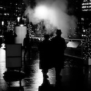

Ray Au (@rayau17)
Photographer and festival co-director managing technology. He brings experience overseeing technical operations at Vancouver Street Photography Collective. A software engineer and Director of Product Management with over 25 years of experience, he volunteers his time as a technical support specialist at Shannon Oaks, an independent living facility, and is Division Director for the downtown Vancouver area of Toastmasters.